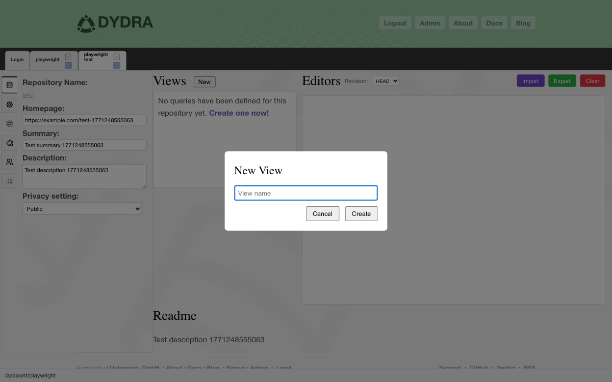
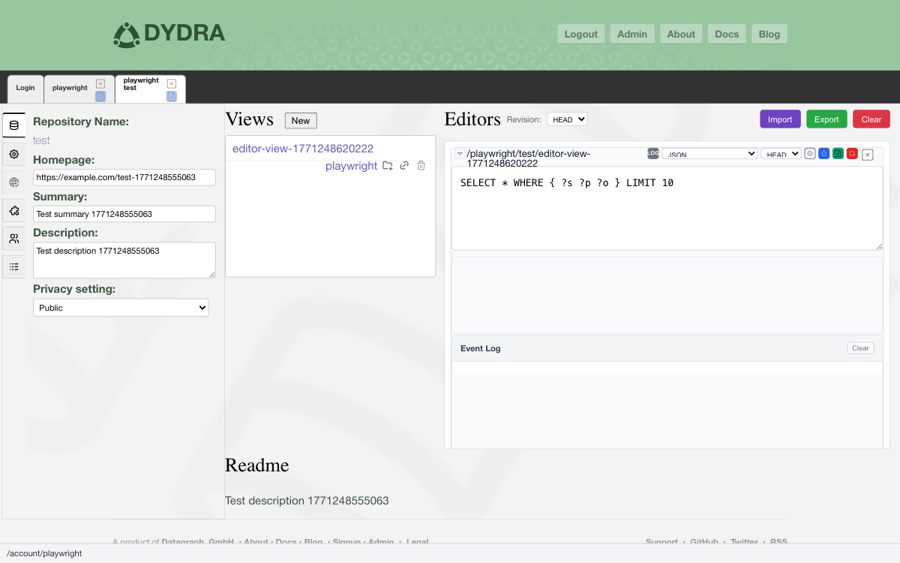

Dydra Studio · user manual · 04
View Operations
A view is a saved SPARQL query. Run it against your repository whenever you like. This chapter tells you how to create, edit, execute, and manage views in Dydra Studio.
Dydra Studio · user manual · 04
A view is a saved SPARQL query. Run it against your repository whenever you like. This chapter tells you how to create, edit, execute, and manage views in Dydra Studio.
A view is a named SPARQL query held in your repository. Views let you:
To create a view:
Step 1
Open the repository the view belongs in.
Step 2
Find the views/queries section on the repository page.
Step 3
Click New View or Create View — or, where the repository holds no views yet, the link that says "Create one now!".
Step 4
A dialog asks for a view name. Give it one no other view in the repository holds, and give the base name only, not a path.

Figure 1: View creation dialog with view name entered
Step 5
Click OK or press Enter to create the view.
Step 6
A popup confirms that the view exists, and reminds you to write the query text and save it.

Figure 2: View creation confirmation popup with instructions
Step 7
An editor panel opens in the repository pane's editor list. Write your SPARQL query there.
Important
a view you have just created holds no query text. Write the query and save it. Until you do, the server does not hold the view.
Edit a view in the repository pane's own editor list.
Step 1
Open the repository that holds the view.
Step 2
Click the view name in the views list.
Step 3
An editor panel opens in the "Editors" section of the repository pane. Note: it opens on the default SPARQL template. It does not load the view's own query text; type or paste that yourself.
Step 1
Find the query text area — the SPARQL editor — in the editor panel.
Step 2
Change the query as you need. The editor highlights syntax and completes as you type.

Figure 3: View editor in repository pane with SPARQL query text entered
Step 3
Click Save in the editor panel to write your changes to the server.
Step 4
The editor confirms the save.
Tip
the editor takes keyboard shortcuts. Press Ctrl+Enter — Cmd+Enter on a Mac — to execute the query without saving it.
Open a view editor in a pane of its own for more room and a clearer desk.
Step 1
Open the repository that holds the view.
Step 2
In the views list, find the view you want to edit.
Step 3
Click the pane button — the folder-plus icon — beside the view name.
Step 4
A pane opens, with a tab carrying the view name and the editor inside it.

Figure 4: View editor in separate pane with SPARQL query text entered
Step 5
Edit the query text in the editor.
Step 6
Click Save to write your changes.
Note
keep as many view editors open as you like — some in the repository pane, some in panes of their own. Each works on its own.
Execute a view to see what the query answers. Several routes reach the same result.
Step 1
Open the view in an editor (either in the repository pane or a separate pane).
Step 2
Check that the query text says what you mean.
Step 3
Choose an output format in the media type selector, where the editor offers one.

Figure 5: View editor with query text and output format selected, ready to execute
Step 4
Click Run, or press Ctrl+Enter — Cmd+Enter on a Mac.
Step 5
The query runs, and the results appear below the editor.
Take the answer in any of these:
| Format | Media Type | Description |
|---|---|---|
| JSON | application/sparql-results+json |
Structured JSON results (default) |
| XML | application/sparql-results+xml |
XML format results |
| HTML | text/html |
Formatted HTML table |
| CSV | text/csv |
Comma-separated values |
| TSV | text/tab-separated-values |
Tab-separated values |
| Turtle | text/turtle |
RDF Turtle format |
| N-Triples | application/n-triples |
N-Triples RDF format |
| RDF/XML | application/rdf+xml |
RDF/XML format |
| JSON-LD | application/ld+json |
JSON-LD format |
| SVG | image/vnd.dydra.SPARQL-RESULTS+GRAPHVIZ+SVG+XML |
Graph visualization |
Each run opens a tab above the results, labelled with the time it ran. The result in that tab belongs to the view that was run and stays there. A result you want to keep — to compare with another view's, or with the same view read an hour later — goes to the results pane, which the Results tab in the left margin reaches. One pane for the whole interface, because what is kept is kept to be compared, and the readings being compared come from more than one repository.
The tab is the one with the graph on it, in the strip of small icons down the left of the pane you are looking at — the same strip as Profile, Configuration and Logs, below them and set apart by a rule. It is in every pane's strip, so it is always beside whatever you are reading. It is not in the bar of tabs across the top: that bar lists what is open, one tab per account, repository and view, and the results pane is not a page you open but a place you send things to.
Step 1
Drag the result tab onto that icon — or press the → on the result tab, which sends it there without a drag. The icon lights up while the drag is in flight, carries the count of what the pane holds, and a drop brings the pane forward so you can see what landed. Pressing it with nothing in flight does the same; pressing it again, in the pane's own margin, goes back to where you were.
Why the icon and not the pane
It is the icon in the margin that takes the drop, and not the pane behind it: only one pane is displayed at a time, so while you are dragging out of an editor the results pane is not on the screen, and something that is not on the screen cannot be dropped on. The icon always is — which is also why it has to be in the margin of the pane you are dragging in, and not somewhere of its own.
Step 2
The result is kept as it was read: the rows, the query that produced them, the time the query ran, how long it took, the repository revision the store answered with, and a digest of the exact document. Readings from several views and several repositories sit one above the other, newest first, each the full width of the window.
Each one keeps the tab it came out of — the time it ran, on a tab, exactly as the editor labelled it — and that tab is a show/hide: press it and the reading folds away to its heading, press it again and it comes back. The heading stays either way, so a folded reading still says which view it was and still has its Run, its Download and its ×. Use the tab when you want a reading out of the way and the × when you want it gone — the fold can be undone and the × cannot.
A presentation you have composed can be kept there too, under the readings. Type
mount <name> in results# into the location bar and it is held in the
pane by its name, drawn when you open it.
Beside Open it carries Download, which writes the presentation to a single HTML file. It is the same file a composed page downloads to: it draws on its own with no network, it carries the queries its panels are built from, and it carries no credential — whoever opens it presses Refresh and types in one of their own, and the queries run against the repositories the panels name. The file holds no rows when it is written, because a presentation kept here by reference has not been run; pressing Refresh is what fills it. This is the way to take a presentation out of the interface — what the pane holds is a reference, and a reload forgets it.
Each entry carries a Run button. It runs that query again, against the same repository, under the credentials of the account you are signed in as — the same ones the editor's own Run used a moment ago. Nothing had to be carried into the sheet for this to work: the sheet is in the interface, not in a file that travels.
What comes back replaces the entry, and the card says what it found:
The comparison is always against the reading you dropped, not against the last one, so repeated presses do not quietly move the baseline.
Run is disabled where the reading cannot be reproduced — if the query was not kept with it, or if the run carried URL arguments this button would drop. The reason is on the button, so you do not have to press it to find out.
Beside Run, each reading carries Download. It writes that reading to a single HTML file: the rows as they were read — all of them, not the first two hundred the pane draws — the query that produced them, when the query ran, and the revision the store answered with. Open the file and it draws on its own, with no network and no account.
It is the same file a composed page and a presentation download to. Press Refresh in it and it asks for a token, runs the same query against the same repository, and redraws from what the store holds now. The token is typed into the copy and held there for as long as the tab is open: it is not written into the file, so a file you send on carries your reading and not your credentials.
Download is never disabled, where Run sometimes is — keeping what you have already read asks nobody for anything. A reading Run would refuse travels with its rows and with no address, and the file says so on its face rather than offering a Refresh that would answer a different question: a reading taken with URL arguments would be re-run without them, so that copy cannot be refreshed at all. The file is named for the view and the moment it was read, so the same view downloaded twice is two files and not one overwriting the other.
This is the way a reading leaves the interface. The pane keeps nothing past the page; the file is what you keep.
Two things the pane does not do. It never reads anything on its own — a sheet that re-read by itself would be a poll against the store — and it keeps nothing past the page: reload, and it is empty, readings and mounted presentations alike. It is a working surface for comparing what you have read, and it says so when it is empty.
Open a view's results in a new browser window. That window shows them as a table, and offers the other formats beside it.
Step 1
Open the repository that holds the view.
Step 2
Find the view in the views list.
Step 3
Click the window button — the link icon — beside the view name.

Figure 6a: View list showing the window button next to a view name
Step 4
A browser window opens and shows the results as a table.

Figure 6b: View results displayed in a new browser window with table format and output format selector
Step 5
Choose another output format from the dropdown in that window.
Step 6
The results redraw in the format you chose.
Note
the new window needs your credentials. The application carries your token into it for you.
Browser Popup Blockers
if no window opens, check that your browser is not blocking popups for this site. Allow popups for dydra.com.
Delete a view you no longer want.
Warning
a delete is permanent, and nothing brings the view back. Keep a copy of the query text if you may want it later.
Step 1
Open the repository that holds the view.
Step 2
Find the view in the views list.
Step 3
Click the delete button — the trash icon — beside the view name.
Step 4
A dialog asks you to confirm.

Figure 7: View deletion confirmation dialog with warning message
Step 5
Read it. It tells you that nothing will bring the view back.
Step 6
Click OK or Confirm, if you are sure.
Step 7
The view goes from the views list, and the application reports success.
The SPARQL editor carries several things worth knowing about.
One editor holds as many query tabs as you want:
To put the query text back as you last saved it:
The editor keeps an event log. It shows:
Drag a query editor tab out of the application window and it becomes a window of its own:
If a view will not save, check that:
If a query will not run, check that:
If a view is missing from the list:
With your views in order, you can: